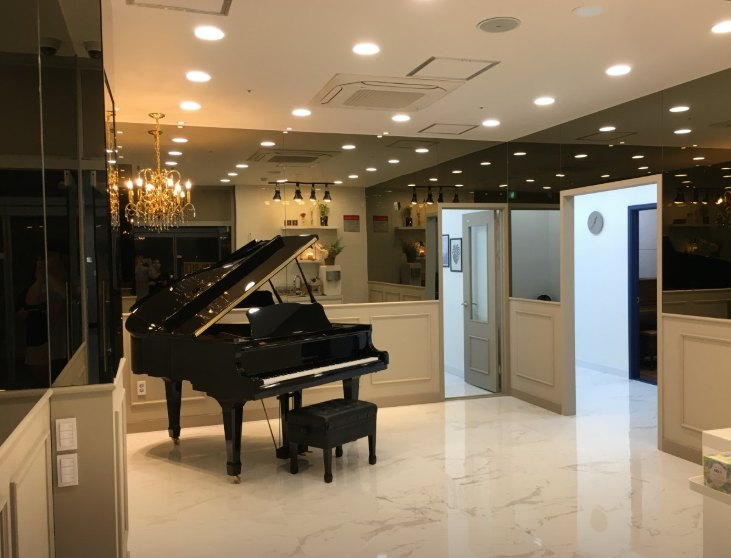
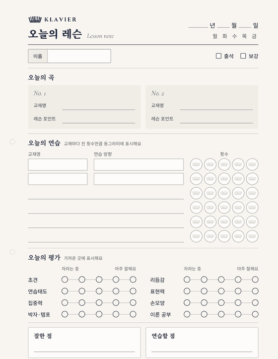
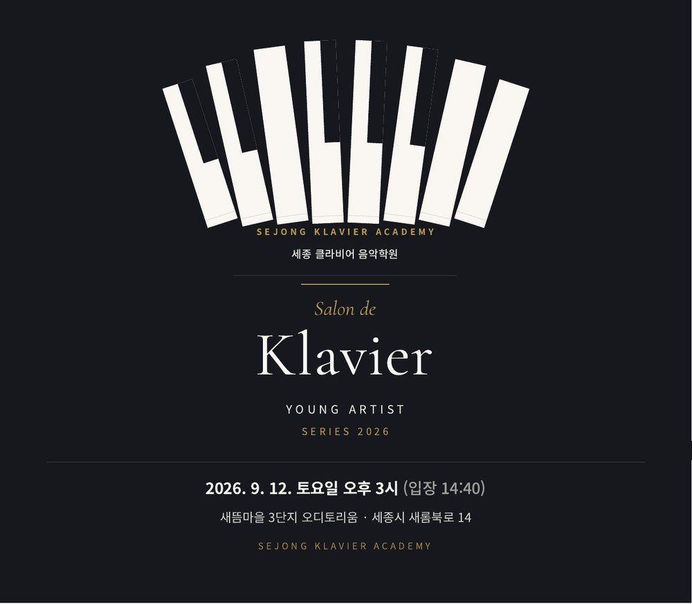
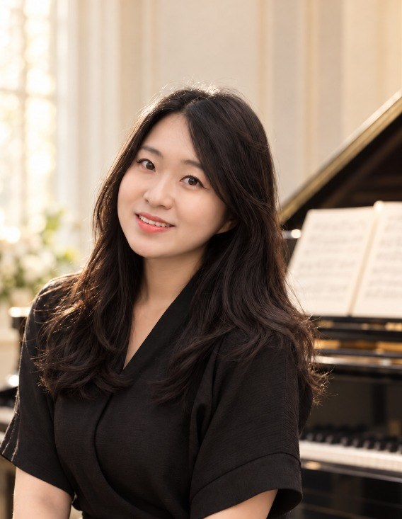

오늘 친 한 곡이,
오래도록 기쁨이 되기를
잘 치는 아이보다, 피아노를 오래 사랑하는 아이로 키웁니다.아이마다 다른 속도에 맞춰 가르치는 세종 클라비어 음악학원입니다.

- 위치
- 세종시 새롬중앙로 51에스월드빌딩 305호
- 운영 시간
- 월–금 12:30 – 19:00
- 상담 전화
- 010-4488-4763
같은 자리에서, 열 번째 해
아이들이 평균 5년 넘게 다닙니다.오래 믿고 맡겨 주신 마음이 클라비어의 가장 큰 자랑입니다.
- 개원
- 2017년
- 새롬동에 처음 문을 연 해
- 올해
- 10번째 해
- 열 해를 이어 온 신뢰
- 재원 기간
- 5년 넘게
- 평균 재원 기간
50분, 한 순간도 비지 않게
- 3분체크인선생님 앞에서 오늘의 곡과 연습 방향을 정합니다.
- 5분손 풀기연습실에서 하농과 스케일로 짧게 손을 풉니다.
- 단계별본 레슨선생님 앞에서 곡별 레슨 포인트, 시범, 교정을 받습니다.
- 단계별과제 연습연습실에서 선생님이 정해 준 부분만, 느리게 정확하게 연습합니다.
- 10분독보 · 이론이론실에서 자기 단계의 카드와 교재로 공부하고, 모르는 것은 바로 질문합니다.
- 2분마무리선생님 앞에서 잘한 점 한 마디와 다음 연습을 듣습니다.
본 레슨과 과제 연습 시간은 아이의 단계와 곡에 맞춰 선생님이 정합니다.
아이마다 책이 다릅니다
원생 수준과 성향에 맞춰 교재를 고르고
수업마다 조금씩 조율합니다.매 수업 교재 두 권 이상 함께 나갑니다.
내 책장, 다섯 권의 교재
중급 과정, 체르니 단계의 예시입니다.초급과 고급 과정은 단계에 맞게 구성이 달라집니다.
- 하농손가락 힘과 고른 소리
- 체르니연습곡으로 기술 쌓기
- 재즈 소곡집리듬감과 치는 재미
- 반주코드로 노래에 맞춰 치기
- 병행곡좋아하는 곡, 무대에 설 곡
처음 두 달, 이렇게 시작합니다
- 1–2주
- 바른 자세와 둥근 손의자 높이와 앉는 자리를 맞추고, 손가락을 둥글게 세우는 법을 익힙니다.
- 3–4주
- 건반과 친해지기검은 건반 묶음으로 '도'를 찾고, 손가락 번호로 건반 위치를 익힙니다.
- 5–6주
- 리듬을 몸으로손뼉과 노래로 박을 세고, 기본 리듬을 건반 위에서 칩니다.
- 7–8주
- 악보 읽기와 첫 곡오선과 가온 '도'를 읽기 시작하고, 처음으로 한 곡을 끝까지 완성합니다.
주차별 순서는 예시이며, 순서와 기간은 아이에 맞춰 조정합니다.
아이마다 다르게 가르칩니다
입학 상담지와 첫 한 달 동안 원장이 관찰한 모습으로 아이의 성향을 살핍니다.성향은 정답이 아니라, 아이에게 맞는 길을 찾기 위한 출발점입니다.
차분한 아이 · 활발한 아이
차분한 아이에게는 한 곡을 깊이 다듬는 시간을, 활발한 아이에게는 짧게 나눈 과제와 리듬 놀이를 더합니다.
낯을 가리는 아이 · 새로운 걸 좋아하는 아이
낯을 가리는 아이는 같은 선생님, 같은 순서로 편안함을 먼저 만들고, 새로운 걸 좋아하는 아이에게는 다양한 곡으로 호기심을 이어 갑니다.
칭찬에 힘이 나는 아이 · 도전에 힘이 나는 아이
칭찬에 힘이 나는 아이는 잘한 점을 먼저 짚어 주고, 도전에 힘이 나는 아이에게는 한 단계 높은 목표를 건넵니다.
눈으로 배우는 아이 · 귀와 몸으로 배우는 아이
눈으로 배우는 아이는 악보와 카드로 정리해 주고, 귀와 몸으로 배우는 아이는 먼저 들려주고 따라 치게 합니다.
성향 관찰은 심리 검사가 아니며, 수업 방식을 정하는 데에만 씁니다.
좋은 음악은, 좋은 공간에서 시작됩니다
아이들이 매일 피아노와 마주하는 곳입니다.클라비어는 그 시간을 더 편안하고 아름답게 만들기 위해 공간의 작은 요소까지 세심하게 살폈습니다.
그래서 2027년 리뉴얼에서는 눈에 보이는 디자인만큼이나, 아이들이 매일 마주하고 생활하는 공간의 마감재에 관심을 기울였습니다.
흙을 담은 벽
손 미장은 호텔 같은 고급 공간에 쓰는 마감 방식입니다.손이 많이 가고 비용도 더 들지만, 아이들이 쾌적하게 머물도록 모든 벽을 흙, 옥, 편백나무 분말의 천연 미장재로 한 겹 한 겹 손으로 바릅니다.화학 성분 대신 자연을 담았습니다.
새로 단장한 공간이라면 유해 물질부터 걱정되실 것입니다.클라비어의 벽은 시험성적서와 친환경 인증으로 무독성이 확인된 토로 클레이데코입니다.피부가 예민한 아이도, 호흡기가 약한 아이도, 아토피가 있는 아이도 안심하고 보내실 수 있습니다.
선생님 한 분에 아이 다섯 명
아무리 좋은 공간도 붐비면 소용이 없습니다.클라비어는 선생님 한 분이 한 시간에 다섯 명만 전담합니다.북적이는 복도도, 방이 비기를 기다리는 줄도 없습니다.공간에 여유가 있어야 아이는 자기 속도로 연습하고, 선생님의 눈도 한 아이에게 오래 머뭅니다.
정원이 차면 더 받지 않고 대기로 안내해 드립니다.자리를 늘리는 대신, 지금 다니는 아이들의 시간과 공간을 지키는 쪽을 택했습니다.선생님 한 분에 다섯 명, 클라비어가 지키는 약속입니다.
공사는 2026년 12월 24일부터 2027년 1월 3일까지입니다.환기와 분진 물청소를 마친 뒤 새 공간에서 뵙겠습니다.
머무는 동안, 오가는 길까지 살핍니다
아이를 보내 놓고 마음 졸이지 않으시도록, 머무는 공간과 오가는 길을 함께 챙깁니다.
넓고 조용한 연습실
가장 작은 방도 약 1.5평
- 여느 학원보다 넓은 방에서 답답함 없이 연습합니다.
- 방마다 피아노와 흡음재를 갖춰, 옆방 소리에 방해받지 않습니다.
- 문마다 창이 있어 아이를 닫힌 방에 혼자 두지 않습니다.
언제나 지켜봅니다
전 구역 CCTV
- 학원 전 구역을 CCTV로 살핍니다.연습실 안까지 빠짐없이 봅니다.
- 영상만 남기고 소리는 녹음하지 않아, 아이의 사생활을 지킵니다.
- 사진과 영상은 보호자께서 동의하신 범위 안에서만 씁니다.
문을 나서는 순간까지
등하원 알림과 픽업
- 아이가 도착했을 때와 나설 때, 보호자께 바로 알려 드립니다.
- 외부인은 학원 안으로 들어올 수 없습니다.
- 픽업 서비스를 운영합니다.대상과 시간은 상담 때 안내 드립니다.
로비, 복도, 연습실, 이론교육실, 원장실까지, 아이가 머무는 모든 공간을 같은 기준으로 살핍니다.


아이들이 편안하게 머물며 음악을 발견하고, 작은 성취를 쌓아 가는 곳.좋은 교육을 향한 마음은 아이들이 머무는 공간에서도 이어집니다.
세종 클라비어가 다르게 하는 것

매 수업, 레슨일지 한 장
아이가 오늘 무엇을 배우고 얼마나 연습했는지 수업마다 한 장으로 남깁니다.한 달치는 표지를 씌운 레슨북 한 권으로 집에 보내 드리고, 보신 뒤 한 줄 피드백과 서명을 받습니다.
- 오늘의 곡교재와 레슨 포인트를 적습니다.
- 오늘의 연습친 횟수만큼 동그라미에 표시합니다.
- 오늘의 평가초견, 리듬감, 손모양, 표현력 등 여덟 항목을 봅니다.
- 잘한 점 · 연습할 점선생님이 직접 적습니다.

이달의 클라비어
매달 상 받은 아이의 이름을 게시판에 겁니다.잘 치는 아이만이 아니라 꾸준히 연습한 아이, 한 단계 올라선 아이도 상을 받습니다.
- 에튀드상한 달 동안 가장 성실하게 건반 앞에 앉은 아이에게 드립니다.연습곡이라는 이름처럼, 꾸준한 연습의 힘을 칭찬하는 상입니다.
- 앙코르상연주가 돋보인 아이에게 드립니다.한 번 더라는 이름처럼, 다시 듣고 싶은 연주에 보내는 박수입니다.
- 크레센도상다음 단계로 올라선 아이에게 드립니다.점점 크게라는 이름처럼, 한 걸음 자란 것을 함께 축하하는 상입니다.
첫 한 달, 원장 직접 지도
입학 후 첫 한 달은 원장이 직접 지도하며 아이의 기초와 성향을 파악합니다.13:00–14:00, 17:00–19:00 수업은 추가 비용 없이 원장이 전담합니다.
두 지도자의 교차 지도
원장반과 선생님반을 두 달마다 교차 편성합니다.서로 다른 시선으로 살펴, 한 사람이 놓친 부분까지 보완합니다.
소수 정원 전담 지도
선생님 한 분이 한 시간에 다섯 명만 전담합니다.아이 한 명 한 명과 마주하는 지도 시간을 충분히 확보합니다.
정기 연주회와 대외 콩쿨
2년에 한 번 공연장에서 정기 연주회를 열고, 방학마다 대외 콩쿨에 나갑니다.

- 정기 연주회Salon de Klavier · Young Artist Series. 독주, 듀엣, 전원 합주로 꾸미는 공연장 무대입니다.
- 대외 콩쿨여름방학과 겨울방학에 한 번씩, 해마다 두 차례 참가합니다.
주리, 한 곡으로 성장을 확인하는 무대
매주 수업은 한 마디, 한 줄을 고치는 시간입니다.그래서 곡 전체가 어디까지 왔는지는 오히려 잘 보이지 않습니다.주리는 아이가 한 곡을 처음부터 끝까지 혼자 연주하고, 원장이 그 연주를 듣고 지금 실력을 짚어 주는 정기 점검입니다.
- 간격
- 2–3개월에 한 번
- 한 해에 4~6회
- 급수
- 8급에서 1급까지
- 배우는 교재에 맞춘 여덟 단계
- 심사
- 1명씩
- 원장이 직접 듣고 평가합니다
주리라는 이름
주리(jury)는 심사위원단을 뜻하는 말입니다.라틴어로 맹세한다는 뜻의 유라레(jurare)에서 나왔고, 공정하게 판정하겠다고 맹세한 사람들을 가리켰습니다.
유럽과 미국의 음악원에서는 학기가 끝날 때마다 학생이 교수진 앞에서 연주하고 평가를 받습니다.이 실기 심사를 지금도 주리라고 부릅니다.전공생은 이 자리를 거치며 한 학기의 공부를 확인받고 다음 학기로 올라갑니다.
클라비어의 주리
클라비어는 이 전통을 아이들 눈높이로 옮겼습니다.심사위원 자리에는 원장이 앉고, 합격과 불합격은 가리지 않습니다.대신 음악원의 주리가 하는 일은 그대로 가져왔습니다.같은 기준으로 듣고, 들은 것을 글로 남기고, 다음 단계로 올라갈 때를 정합니다.
평가를 받는 날이 정해져 있으면 연습에 방향이 생깁니다.아이는 "이 곡을 그날까지 완성한다"는 목표를 갖고, 보호자는 두세 달마다 아이가 얼마나 자랐는지를 눈과 귀로 확인합니다.
주리는 이렇게 진행합니다
- 1주리 곡 준비지금 배우는 교재에서 주리 곡을 정하고 수업에서 완성합니다.주리를 위해 진도를 멈추지 않습니다.
- 2원장 앞 독주로비 그랜드 피아노에서 한 명씩, 인사부터 마지막 음까지 혼자 해냅니다.틀려도 멈추지 않고 끝까지 치는 것까지가 연주입니다.
- 3다섯 항목 심사정확성(음과 손가락 번호), 박과 리듬(처음 잡은 빠르기를 끝까지 지키는지), 소리와 표현(셈여림과 곡의 분위기), 악보 읽기, 무대 예절(서고, 인사하고, 기다리는 법)을 봅니다.
- 4연주 영상 기록클라비어가 해 오던 연주 영상 촬영을 주리에도 그대로 씁니다.그날의 연주를 촬영해 보호자께 보내 드립니다.
- 5심사평과 피드백잘한 점과 고칠 점, 다음 주리까지의 과제를 적은 심사평을 영상과 함께 드립니다.보호자와 원장이 같은 자료를 놓고 아이의 진도를 점검합니다.
주리를 하면 달라지는 것
아이에게는 목표가 생깁니다
두세 달 뒤 원장 앞에서 칠 곡이 정해져 있으면 오늘 연습할 이유가 분명해집니다.끝까지 쳐낸 경험은 다음 무대의 자신감이 됩니다.
보호자는 진도를 직접 확인합니다
"잘하고 있어요"라는 말 대신 영상과 심사평을 받습니다.지난 주리 영상과 나란히 보면 무엇이 늘었는지가 그대로 보입니다.
수업은 방향을 잡습니다
심사평에 적힌 과제가 다음 두세 달 수업의 중심이 됩니다.누가 가르치든 같은 기준으로 아이를 봅니다.
급수 기준표 보기
클라비어의 급수 체계는 입문 8급에서 최고 1급에 이르는 여덟 단계로 구성됩니다.각 급은 해당 교재의 전 과정을 이수하였음을 인증합니다.
| 급 | 교재 | 단계 | 이 급에서 배우는 것 |
|---|---|---|---|
| 8급 | 바이엘 1 | 초급 | 건반 자리, 손 모양, 높은음자리표 읽기 |
| 7급 | 바이엘 2 | 초급 | 양손 함께 치기, 낮은음자리표 읽기 |
| 6급 | 바이엘 3 | 초급 | 임시표, 셈여림 기호, 8분음표 리듬 |
| 5급 | 바이엘 4 | 초급 | 조표, 음계의 기초, 짧은 곡 외워 치기 |
| 4급 | 체르니 100 | 중급 | 손가락 독립, 빠르기 유지, 병행곡 완성 |
| 3급 | 체르니 30 | 중급 | 페달, 긴 곡의 구성, 표현 |
| 2급 | 체르니 40 | 고급 | 기교, 소나타 악장 |
| 1급 | 작품반 | 고급 | 연주회 레퍼토리, 곡 해석 |
승급은 어떻게 하나요
교재를 마치고, 주리에서 연주로 확인받으면 다음 급으로 올라갑니다.
- 승급 조건지금 급의 교재를 마치고, 주리에서 그 급의 곡을 기준에 맞게 연주합니다.
- 승급하면크레센도상을 드리고, 심사평과 연주 영상에 새 급을 함께 안내합니다.
- 오르지 않았다면심사평의 과제를 채워 다음 주리에서 승급합니다.수업은 그대로 이어집니다.
- 승급 원칙한 번에 한 급씩 올라가며, 받은 급은 내려가지 않습니다.
- 시작하는 급처음 배우는 아이는 8급, 배우다 온 아이는 첫 달 원장 지도 후에 정합니다.
급은 지금 배우는 단계를 나타낼 뿐, 아이끼리 견주는 데 쓰지 않습니다.
주리와 급수 제도는 2027년부터 시작합니다.첫 주리 일정은 시행 전에 따로 안내해 드립니다.
수업은 시간 정원제로 운영합니다
한 시간에 아이들이 몰리면 선생님과 마주하는 시간이 줄어듭니다.그래서 선생님 한 분이 한 시간에 다섯 명만 전담하도록 정원을 정해 두었습니다.수업은 월요일부터 금요일까지, 주 1회에서 4회 중 고르실 수 있습니다.
새 학기 시간표, 전화 대신 휴대폰으로 신청하세요
학기가 바뀔 때마다 원하는 시간에 자리가 있을지, 언제 연락해야 할지 마음 쓰이셨지요.그래서 클라비어는 시간표 신청 화면을 직접 만들었습니다.신청이 열리는 날, 댁에서 편하게 요일과 시간만 골라 주시면 됩니다.
- 남은 자리를 보고 고르세요시간마다 몇 자리가 남았는지 바로 보입니다.학원에 따로 물어보지 않으셔도 됩니다.
- 먼저 신청하신 순서 그대로신청하신 시각이 초 단위까지 남습니다.누구에게나 같은 기준으로 자리를 드립니다.
- 정원이 차면 더 받지 않습니다선생님 한 분이 다섯 명만 맡습니다.자리가 찬 시간은 대기로 받아 두었다가, 빈자리가 나면 순서대로 연락드립니다.

자리가 없을 때는 신청하신 순서대로 연락드립니다
원하시는 시간에 자리가 나면 대기를 신청하신 순서대로 안내해 드립니다.
수업료
월 수업료는 교재 단계와 주당 횟수로 정해집니다.
(단위: 원)
| 단계 | 교재 기준 | 주 1회 | 주 2회 | 주 3회 | 주 4회 |
|---|---|---|---|---|---|
| 초급 | 바이엘 | 110,000 | 120,000 | 130,000 | 140,000 |
| 중급 | 체르니 100 · 30 | 120,000 | 130,000 | 140,000 | 150,000 |
| 고급 | 체르니 40 이상 | 130,000 | 140,000 | 150,000 | 160,000 |
한 달 4주 수업 기준이며 1회 50분입니다.급수는 지금 배우는 교재 기준입니다.교재비와 연주회비는 별도이고, 작품반과 전담 레슨은 상담 때 안내합니다.
교습비 운영 원칙
다섯째 주 수업은 클라비어가 더 드립니다
교습비는 한 달 네 주 수업을 기준으로 받습니다.다섯째 주가 있는 달에도 수업은 쉬지 않고, 그 주 수업은 교습비 없이 더해 드립니다.공휴일로 빠진 수업이 있다면 이 주에 먼저 채워 드립니다.
- 1주
- 2주
- 3주
- 4주
- 5주+
일 년을 다니면 한 달 가까운 수업을 더 받게 됩니다.
수업 운영 안내
- 정규 수업
- 한 달 4주교습비는 한 달 4주 수업의 값입니다.다섯째 주는 플러스 주간으로, 공휴일로 쉰 수업을 먼저 채우고 남는 날은 추가 수업으로 진행합니다.날짜는 해마다 드리는 휴원·보강 달력에 표시합니다.
- 입학하는 달
- 남은 횟수만큼월 교습비 ÷ 월 횟수 × 남은 횟수로 냅니다.예: 주 3회(월 12회)에 남은 수업이 7번이면 월 교습비의 7/12.
- 납부
- 매월 1일계좌이체, 카드, 결제선생으로 내실 수 있습니다.
- 교습비 차감
- 질병 결석에 한해질병으로 3일 이상 연속 결석한 경우에만 그 기간의 교습비를 차감합니다.진료확인서나 약봉투 사진을 보내 주세요.그 밖의 결석은 차감과 환불이 없습니다.
- 그 밖의 결석
- 보강으로 대신여행, 개인 일정, 하루 이틀 아픈 경우는 5주차 보강일을 우선으로 채워 드립니다.보강은 그달 안에 마치며 다음 달로 넘기지 않습니다.연락 없는 결석은 보강이 어렵습니다.
- 학원 방학
- 여름 3일 · 겨울 3일7월 마지막 주와 12월 마지막 주입니다.정확한 날짜는 휴원·보강 달력에 표시합니다.
- 그만두실 때
- 2주 전에 알려 주세요교습비는 학원법 시행령 별표 4에 따라 사유 발생일부터 5일 이내에 돌려 드립니다.
환불 규정
| 그만둔 시점 (1개월 기준) | 돌려 드리는 금액 |
|---|---|
| 수업 시작 전 | 납부한 교습비 전액 |
| 총 수업 시간의 1/3이 지나기 전 | 납부한 교습비의 2/3 |
| 총 수업 시간의 1/2이 지나기 전 | 납부한 교습비의 1/2 |
| 총 수업 시간의 1/2이 지난 뒤 | 반환하지 않음 |
교습비는 학원에 게시한 금액과 같습니다.

아이를 맡겨 주신 부모님께
처음 건반 앞에 앉은 아이의 손은늘 조금 떨립니다.그 작은 손끝에서 첫 소리가 날 때,아이의 눈이 반짝입니다.저는 그 순간을 지키기 위해이 일을 하고 있습니다.
2017년 새롬동에 문을 연 뒤로,어느덧 열 번째 해를 맞았습니다.그동안 많은 아이들이이 문을 열고 들어와 자라 갔습니다.한자리를 지킬 수 있었던 건,믿고 맡겨 주신 마음 덕분입니다.
잘 치는 아이보다,오래 사랑하는 아이로 키우고 싶습니다.빨리 가는 것보다 바르게 가는 것이더 멀리 간다고 믿습니다.어려운 날에는 기다려 주고,해낸 날에는 누구보다 크게 기뻐하겠습니다.아이의 속도는 존중하되,가능성은 결코 낮게 보지 않겠습니다.
아이 한 명을 가르친다는 건,한 가정의 시간을 함께 맡는 일입니다.그래서 저에게는어느 수업도 가볍지 않습니다.보내 주시는 믿음만큼,저 역시 매일 더 배우는 선생이 되겠습니다.
언젠가 아이가 자라 지친 날,피아노 앞에서 마음을 고를 수 있기를.그 곁에 클라비어에서 보낸 시간이따뜻하게 남아 있기를 바랍니다.
공지사항
공지를 불러오는 중입니다.
상담은 이렇게 진행됩니다
상담은 예약제입니다.톡톡이나 전화로 문의해 주세요.
- 예약톡톡이나 전화로 편한 시간을 정해 주세요.톡톡은 당일, 늦어도 24시간 안에 답해 드립니다.
- 방문 상담 20분원장이 아이를 먼저 5분 만나 손 모양과 악보 읽기를 본 뒤, 보호자께 시작 교재와 첫 달 목표를 말씀드립니다.
- 체험 레슨 30분담당 선생님과 한 곡을 배우고, 체험 일지 한 장을 들고 돌아갑니다.
- 등록충분히 비교해 보시고 정하세요.그 자리에서 등록을 권하지 않습니다.
- 주소
- 세종시 새롬중앙로 51 에스월드빌딩 305호
- 전화
- 010-4488-4763
- 운영 시간
- 월–금 12:30 – 19:00
- 인스타그램
- @klavier_academy
수업 중에는 전화를 받기 어렵습니다.톡톡으로 먼저 남겨 주시면 수업이 끝나는 대로 연락드립니다.
자주 묻는 질문
몇 살부터 시작하면 좋을까요?
일곱 살 무렵을 권합니다.선생님과 이야기가 통하고, 손가락에 힘이 붙는 때입니다.더 어린 아이라면 상담 때 아이를 보고 솔직하게 말씀드립니다.
집에 피아노가 없어도 되나요?
처음에는 학원 연습만으로 충분합니다.집에서 칠 악기가 필요해지는 때가 오면, 고르는 법을 함께 안내해 드립니다.
학원에서 혼자 연습만 하다 오는 건 아닌가요?
50분 동안 선생님 앞에 세 번 앉습니다.레슨에서 짚은 부분만 연습하고, 그 내용은 레슨일지에 남습니다.
원장님께 직접 배울 수 있나요?
입학 후 첫 한 달은 원장이 직접 가르칩니다.13:00–14:00, 17:00–19:00에 오시면 추가 비용 없이 원장이 전담합니다.
결석하면 어떻게 되나요?
수업 전에 연락 주시면 진도와 다음 수업을 안내해 드립니다.보강은 5주차 보강 주간에 잡고, 차감 기준은 교습비 운영 원칙에 있습니다.
진도가 느린 것 같아요.
레슨일지의 연습 횟수와 평가를 함께 봐 주세요.교재는 아이의 수준과 성향에 맞춰 언제든 조율합니다.
콩쿨에도 나갈 수 있나요?
체르니반부터 희망자에 한해 여름·겨울 외부 콩쿨에 나갑니다.참가비와 준비 레슨은 따로 안내해 드립니다.
아이가 그만두고 싶다고 해요.
초등 3~5학년에 흔히 오는 고비입니다.결정하시기 전에 한번 상의해 주세요.함께 방법을 찾겠습니다.